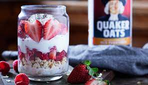

Berry Overnight Oats

Mason Jar Berry Overnight oats
Prep these fruity, creamy oats the night before and in the morning you've got a quick, fresh breakfast.
Ingredients
- 1/2 cup Oats (Quick or Old Fashioned, uncooked)
- 1/2 cup non-fat milk
- 1/2 cup non-fat plain Greek yogurt
- 1 teaspoon chia seeds (Optional)
- 1 cup fresh mixed berries and fruit
Steps
- Add Oats to your container of choice and pour in milk.
- Layer Greek yogurt, chia seeds and mixed fruit and berries.
- Refrigerate overnight and enjoy in the morning!